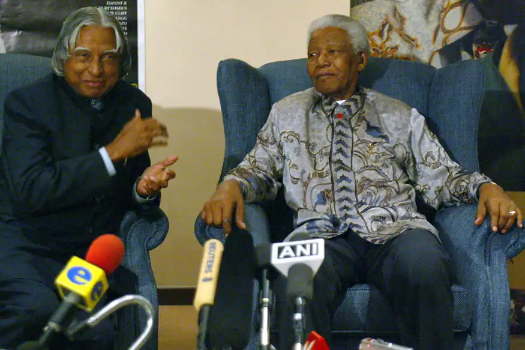

A Tribute To
Missile Man of India
Dr.A.P.J.Abdul Kalam
Dr. A P J Abdul Kalam's Biography - About His Family and Struggle Life
Dr. A P J Abdul Kalam was born to a poor Tamil Muslim family.His full name was Avul Pakir Jainulabdeen Abdul Kalam. He lived with his family in the temple city of Tamilnadu, Rameswaram, where his father, Jainulabdeen, had a boat and was an imam of a local mosque. At the same time, his mother, Ashiamma, was a housewife. Kalam had four brothers and one sister in his family, from which he was the youngest. Kalam's ancestors were wealthy traders and landowners and had vast land and property tracts. But with time, their business of ferrying pilgrims and trading groceries suffered huge losses due to the Pamban Bridge's opening. As a result, Kalam's family had become inadequate and struggled hard to make a living. At a tender age, Kalam had to sell newspapers to supplement his family income.

Dr. A P J Abdul Kalam's Biography - Educational Background of Kalam
Although Kalam had average grades in school, he was very hard working and had an immense desire to learn. He spent a lot of time studying and had developed a particular interest in mathematics. Kalam left Schwartz higher secondary school after completing his early education and went to Saint Joseph's College, Tiruchirapalli. From Saint Joseph's College, he graduated in physics in 1954. He moved to Madras in 1955 to study aerospace engineering at Madras Institute of Technology.
Dr. A P J Abdul Kalam's Biography - Kalam as a Scientist
Kalam joined as a scientist in the aeronautical development establishment of DRDO in 1960, after graduation. His career started with him designing a small hovercraft. However, he was not convinced by his choice of a job at the DRDO. Kalam was transferred to ISRO in 1969, where he was the project director of India's first satellite vehicle launch. The satellite vehicle deployed the Rohini satellite successfully in near-Earth orbit in July 1980. Kalam received the Government's LV and Slv projects between the 1970s-90s. He directed two projects like Project Devil and Project Valiant, which aimed at developing ballistic missiles from the successful SLV program's technology Kalam somehow convinced Indira Gandhi and sought secret funds for these aerospace projects. His research and immense knowledge brought him and the nation great laurels in the 1980s.
Kalam then went on to become the scientific advisor of the defence minister in 1992 and served at the same post for five years before getting promoted to the post of principal scientific advisor to the government. His immense role in the country's 1998 nuclear weapons tests solidified India as a nuclear power.
Dr. A P J Abdul Kalam's Biography -Kalam as the 11th President of India
Sir Kalam was entitled to be the 11th president of India. His term period of 25th July 2002 to 25th July 2007 was achieved by winning a presidential election in 2002 with a massive margin of votes. National Democratic Alliances’ nominated him to be president and it was supported by Samajwadi Party and National Congress Party. He was lovingly called as peoples’ president as he had done uncountable works for the welfare of the people and through the entire country.
The “office of profit” is perhaps the hard Act that he had to sign. The “office of profit”, according to the English Act of Settlement in 1701 explains that no single individual who has a professional set up under the royal family, who has some kind of provision with or who is taking a pension from the prince has the right to work for the of the “House of Commons”
Dr. A P J Abdul Kalam's Biography - Writings of Dr. APJ Abdul Kalam
Dr. A.P.J. Abdul Kalam's writing resonates with clarity and inspiration, designed to ignite the aspirations of his readers. His books, such as "Wings of Fire" and "Ignited Minds," are celebrated for their straightforward language and profound insights. Kalam’s narrative seamlessly blends personal anecdotes with visionary ideas, encouraging readers to embrace education, innovation, and perseverance. His works are not just a recount of scientific achievements but a reflection on the potential within each individual to drive change and contribute to the greater good. Through his motivational tone and accessible style, Kalam instills a sense of purpose and possibility, urging readers to dream big and work diligently toward realizing their goals.Kalam not only shares his experiences but also instills a sense of responsibility and optimism, inspiring individuals to contribute meaningfully to society and strive towards a brighter future.
Dr. A P J Abdul Kalam's Biography - Achievements of Abdul Kalam
Abdul Kalam was a person of a golden heart who has received ample awards and achieved many things during his life journey. In 1981 Abdul Kalam received the prestigious Padma Bhushan award. In 1990 he received the Padma Bhushan award. The renowned personality, because of his tremendous effort towards the nation, received the Bharat Ratna in 1997. In the same year, he was awarded the Indira Gandhi Award for National Integration. The government of India awarded Kalam with the Veer Savarkar awardSASTRA Ramanujan prizeVon Braun Award by the National Space Society.
Dr. A P J Abdul Kalam's Biography - The Demise of Abdul Kalam
Abdul Kalam was a mortal human being just like us, but for his contribution to the country he remained immortal in the hearts of people. Dr. APJ Abdul Kalam was one such personality who died at 83. It was shocking news for the entire country as a pure soul left us forever. Abdul Kalam while delivering a speech for the youth in an event at IIM Shillong. During the middle of the speech, he suffered from a cardiac arrest and collapsed. Although he got admitted to the best hospital in Shillong, the doctors could not save him.
Then his body was airlifted to Gugati, and from there, it was taken to New Delhi in an Airforce plane. Their President, vice president, and some other leaders prayed for his soul. His body was then covered in the Indian National flag and brought to his hometown. About 35000 people attended his funeral event and prayed for such a great soul.
A Glimpse into rare photo of Dr.A.P.J.Abdul Kalam
Eminent Indian scientists Dr K. Chidambaram and Dr Abdul Kalam, who masterminded the country's nuclear tests, share a joke at a function in Bombay.

Scientist APJ Abdul Kalam receiving Padma Bhushan Award from President Neelam Sanjiva Reddy in New Delhi.

Former South African president Nelson Mandela meets with President APJ Abdul Kalam at the Mandela Foundation offices in Johannesburg.
Abdul Kalam presenting a report on fighter aircraft accidents to Defence Minister Mulayam Singh in New Delhi.

Dr R Chidambaram, Department of Atomic Energy and Chairman Atomic Energy Commission with Dr Abdul Kalam Scientific Advisor of Defence Ministry during a Press Conference after the successful Pokhran II

APJ Abdul Kalam walks beside Gujarat Chief Minister Narendra Modi in Ahmedabad
Atal Bihari Vajpayee poses with Indian scientists, APJ Abdul Kalam, head of India's Defence Research and Development Organisation, and R. Chidambaram, Chairman of Atomic Energy Commission after their meeting
Dr APJ Abdul Kalam walks back after receiving GM Modi Award for Science Achievement in New Delhi

President K. R. Narayanan greets newly-elected President APJ Abdul Kalam during a farewell party at the Presidential Palace
APJ Abdul Kalam gives an award to Aamir Khan for the best popular film providing wholesome entertainment of 2001 during the 49th National film awards ceremony

APJ Abdul Kalam with Sunderlal Bahuguna, father of the Indian Green Movement, at the opening of the Science Congress

Sonia Gandhi greets India's newly elected president, APJ Abdul Kalam outside his residence in New Delhi.

Indian Defense Minister George Fernandes shakes hands with top Indian nuclear scientist APJ Abdul Kalam after autographing a book on the Indian Air Force.

Shah Rukh Khan receives India's fourth-highest civilian award, Padma Shri, from President Abdul Kalam at a ceremony in New Delhi.

Russian President Vladimir Putin and Indian President APJ Abdul Kalam smile during the welcome ceremony at the Presidential palace in New Delhi.